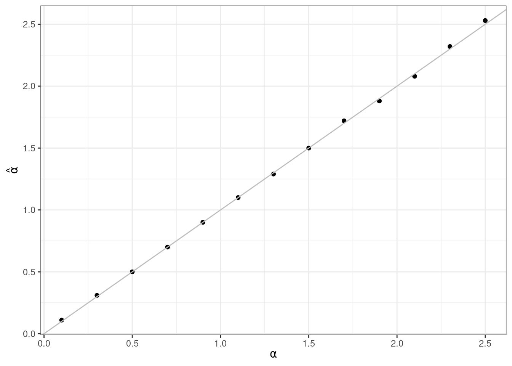
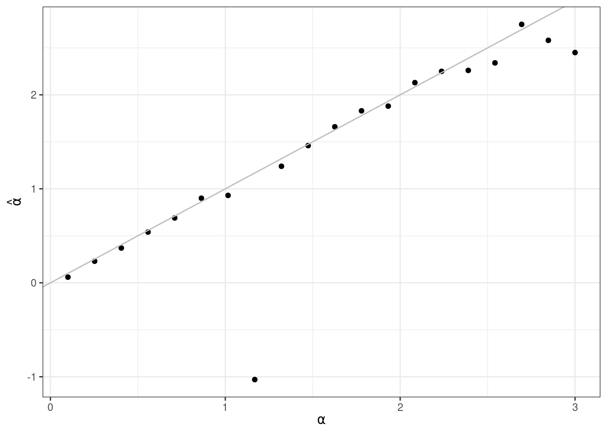

Simulation von IRT Daten
Übung
1 Datensimulation
Wir schauen uns eine ganz simple Version an. Wer interessiert ist, und z.B. Daten für eine Poweranalyse simulieren möchte, findet hier Unterstützung. Installieren und/oder lade folgende Pakete für diese Übung:
1.1 Gleichung
Zuerst müssen wir festlegen, was wir eigentlich simulieren wollen. Wir starten mit einem 2PL Modell. Wie sah die Gleichung dafür noch einmal aus?
\[ P(X_{is} = 1|\theta_s,\beta_i,\alpha_i) = \frac{\exp(\alpha_i(\theta_s-\beta_i))}{1 + \exp(a_i (\theta_s - \beta_i))} \tag{1}\]
- Versuche noch einmal, alle Elemente von Gleichung 1 für dich selbst zu erklären.
Wir versuchen zu schätzen wie hoch die Wahrscheinlichkeit ist, dass eine Person \(s\) ein Item \(i\) richtig (\(X_{is} = 1\)) beantwortet. Dazu nutzen wir den Diskriminationsparameter \(\alpha_i\) und den Schwierigkeitsparameter \(\beta_i\) von Item \(i\) und die Personenfähigkeit \(\theta_s\) von Person \(s\).
1.2 2PL Funktion
- Jetzt beginnt der fun part: Schreibe eine Funktion genannt
calc_2pldie Gleichung 1 in R Code umsetzt.
Der Aufbau der Funktion könnte so aussehen:
calc_2pl <- function(alpha, theta, beta){
}Befülle sie nun mit Gleichung 1. alpha, theta und beta sind hier also die Funktionsargumente (weil sie innerhalb der Klammern von function() stehen), und müssen beim späteren Aufruf der Funktion von der nutzenden Person mit Werten befüllt werden. Diese Werte können dann im Funktionskörper (zwischen {}) genutzt werden, um Gleichung 1 in R Code zu übersetzen.
alpha, theta und beta sind hier also die Funktionsargumente (weil sie innerhalb der Klammern von function() stehen), und müssen beim späteren Aufruf der Funktion von der nutzenden Person mit Werten befüllt werden. Im Funktionskörper (zwischen {}) werden sie genutzt, um \(p\) anhand von Gleichung 1 zu berechnen.
1.3 Simulieren von Daten
Jetzt geht’s los! Wir wollen nun eigene Daten simulieren. Das tolle ist: wir können so alle Aspekte selber festlegen, und daran untersuchen, wie sich das Variieren von bestimmten Parametern auf das Ergebnis auswirkt.
1.3.1 Items
- Zuerst die Items. Baue einen
data.framemit dem Namenitems. Er sollrn_items` Zeilen und 4 Spalten haben und folgendes enthalten:
-
item_id: Die ID des Items, von 1 bis 20` -
alpha: Die Diskriminationsparameter, liegen zwischen 0.1 und 2.5 inrn_items` gleich langen Schritten. -
beta: Die Schwierigkeitsparameter, liegen zwischen -3 und 3 jeweils im Abstand von 0.5.
Die Funktion seq() ist dein Freund. Mehr brauchst du nicht, um die Zahlenreihen zu erzeugen. Schaue dir die Dokumentation an.
- Jetzt können wir die Personen simulieren. Unser Ziel ist also ein
data.frame, der \(\theta\) Werte für die untersuchten Personen enthält. Wir simulieren 100000 Personen, derdata.framesollte also 100000 Zeilen haben. Außerdem benötigen wir zwei Spalten:
-
ID: Die ID der Person, von 1 bis 100000. -
theta: Die Fähigkeit der Person, die wir simulieren. Wir nehmen an, dass die Fähigkeit normalverteilt ist, mit einem Mittelwert von 0 und einer Standardabweichung von 1.
Wir können zufällige Daten aus einer Normalverteilung mit Hilfe der Funktion rnorm() ziehen.
## Ich setzte hier einen Seed, damit meine zufällig erzeugten Werte replizierbar bleiben.
## Wenn du den Seed in deinem Skript auf die gleiche Zahl setzt, bekommst du genau die gleichen Zufallswerte und kannst besser vergleichen.
n_subj <- 5000
subjects <- data.frame(
sub_id = 1:n_subj,
theta = c(rnorm(n_subj, 0, 1))
)Perfekt! Jetzt können wir die Itemantworten simulieren. Dazu sind noch ein paar kleine Schritte nötig:
- Merge die beiden
data.framessubjectsunditemszu einem neuendata.framesim_datzusammen. Und zwar so, dass wir 10^{5} Zeilen bekommen, also jede Person jedes der 20 Items zugeordnet wird (bisher noch ohne Antwort der Person, nur mit den Itemkennwerten. Das erleichtert uns im nächsten Schritt, die Antworten der Personen zu simulieren).
Nutze die Funktion merge() ohne irgendwelche weiteren Argumente.
'data.frame': 100000 obs. of 6 variables:
$ sub_id : int 1 2 3 4 5 6 7 8 9 10 ...
$ theta : num 0.1634 0.9585 -1.1718 0.0475 -2.1447 ...
$ item_id: int 1 1 1 1 1 1 1 1 1 1 ...
$ b : num -3 -3 -3 -3 -3 -3 -3 -3 -3 -3 ...
$ a : num 0.253 0.253 0.253 0.253 0.253 ...
$ c : num 0 0 0 0 0 0 0 0 0 0 ...Unser finaler data.frame hat 10^{5} Zeilen, wie verlangt. Lasst uns auch noch einmal schauen, ob eine zufällige Person alle Items beantwortet hat:
[1] 1 2 3 4 5 6 7 8 9 10 11 12 13 14 15 16 17 18 19 20Das sieht gut aus!
- Jetzt simulieren wir aus diesem Vorbereiteten
data.framedie Antworten der Personen, abhängig von ihren Fähigkeiten \(\theta\) (jede Person hat hier einen zufälligen Wert aus einer Normalverteilung mit \(\mu = 1\) und \(\sigma = 1\) bekommen) und den Itemparametern \(\alpha\) und \(\beta\) (die hatten wir einfach als Sequenz festgelegt). Lege eine neue Spaltepinsim_datan, die für jede Person die Wahrscheinlichkeit enthält, dass sie das jeweilige Item richtig beantwortet. Dafür brauchen wir jetzt unsere Funktioncalc_2pl, die wir am Anfang definiert haben! Diese nimmt aus jeder Zeile dentheta,alphaundbetaWert als input, und berechnet daraus die Wahrscheinlichkeit, dass die Person das Item richtig beantwortet.
Supereinfach geht das ganze mit der mutate() Funktion aus dem tidyverse.
sub_id theta item_id b a c p
1 1 0.16343542 1 -3 0.2526316 0 0.6897998
2 2 0.95846482 1 -3 0.2526316 0 0.7310651
3 3 -1.17181043 1 -3 0.2526316 0 0.6134550
4 4 0.04748595 1 -3 0.2526316 0 0.6834974
5 5 -2.14467200 1 -3 0.2526316 0 0.5538115
6 6 0.03659090 1 -3 0.2526316 0 0.6829016Auf den ersten Blick sieht das schonmal gut aus. Personen mit niedrigerem \(\theta\) Wert haben auch eine geringere Wahrscheinlichkeit, das Item richtig zu beantworten (vgl. z.B. Zeile 2 und 3).
1.4 Auffällige Itemmuster simulieren
Wir können jetzt auch ein bisschen die Antwortmuster manipulieren, um zu schauen, wie sich die Items verhalten, wenn bestimmte Auffälligkeiten vorliegen. Z.B. können wir festlegen, dass Item 3 von Leuten mit hoher Fähigkeit eher mal falsch beantwortet wird, obwohl es ansonsten ein recht einfaches Item ist:
Item 10 wird also unabhängig von der Fähigkeit der Person einfach zufällig 50/50 beantwortet. Wir können später mal schauen, ob das Item auffällig wird.
- Jetzt sind wir auch schon fast am Ende. Wir müssen lediglich aus den Wahrscheinlichkeiten die tatsächlichen Antworten der Personen simulieren. Nutze die Berechneten Antwortwahrscheinlichkeiten
p, um für jede Person und jedes Item einen Wert aus einer Bernoulliverteilung zu ziehen.
Eine Bernoulliverteilung ist eine Binomialverteilung mit nur einem Versuch. Wir können daher die Funktion rbinom() nutzen, und das size-Argument auf 1 setzen.
sub_id theta item_id b a c p answer
1 1 0.16343542 1 -3 0.2526316 0 0.6897998 1
2 2 0.95846482 1 -3 0.2526316 0 0.7310651 0
3 3 -1.17181043 1 -3 0.2526316 0 0.6134550 1
4 4 0.04748595 1 -3 0.2526316 0 0.6834974 1
5 5 -2.14467200 1 -3 0.2526316 0 0.5538115 1
6 6 0.03659090 1 -3 0.2526316 0 0.6829016 1Auch das sieht erst einmal plausibel aus! Toll!
1.4.1 Check mit TAM
Jetzt wollen wir natürlich noch schauen, ob das Ganze so funktioniert hat, wie wir uns das vorgestellt haben. Wir wollen das TAM Paket, um ein 2PL Modell auf die Itemantworten zu fitten. Wenn alles geklappt hat, sollten wir in etwa unsere Itemparameter wiedererkennen.
- Zuerst müssen wir unsere Daten dafür noch ein bisschen aufbereiten, sprich ins Wide-Format bringen. Probiere das also mal aus!
Ich nutze dafür immer deutlich lieber die tidyverse Funktion pivot_wider() als die base-R Funtkion reshape().
sim_dat_wide <- sim_dat %>%
select(item_id, sub_id, answer) %>%
pivot_wider(names_from = item_id, values_from = answer, id_cols = sub_id)
head(sim_dat_wide)# A tibble: 6 × 21
sub_id `1` `2` `3` `4` `5` `6` `7` `8` `9` `10` `11` `12`
<int> <int> <int> <int> <int> <int> <int> <int> <int> <int> <int> <int> <int>
1 1 1 1 1 0 1 1 1 1 1 1 1 0
2 2 0 1 1 1 1 1 1 1 1 0 0 0
3 3 1 1 1 1 0 0 0 1 1 1 1 0
4 4 1 1 1 1 1 1 1 0 0 1 1 1
5 5 1 1 0 0 1 0 0 0 0 0 1 0
6 6 1 1 1 1 1 1 1 1 0 0 1 0
# ℹ 8 more variables: `13` <int>, `14` <int>, `15` <int>, `16` <int>,
# `17` <int>, `18` <int>, `19` <int>, `20` <int>Die Spaltennamen sind jetzt unsere Item-Nummern. Pro Zeile finden sich die Antworten der Personen, entweder hat sie das entsprechende Item richtig (1) oder falsch (0) beantwortet.
- Jetzt können wir das Modell fitten. Nutze dafür wie angekündigt das
TAMPaket, und entferne noch die Spaltesub_id, wir geben nur die Itemantworten in die Funktion. Speichere den Funktionsoutput in dem Objectsim_dat_2PL.
Wir brauchen die Funktion tam.mml.2pl().
sim_dat_2PL <- tam.mml.2pl(sim_dat_wide %>% select(-sub_id), irtmodel = "2PL", verbose = FALSE)- Schau dir die Itemparameter an, die das Modell geschätzt hat. Sie finden sich unter
sim_dat_2PL$item_irt[, c("alpha", "beta")]. Vergleiche mit den ursprünglichen Itemparametern, die wir initemsfestgelegt haben. Was fällt dir auf?
items_2pl <- apply(sim_dat_2PL$item_irt[, c("alpha", "beta")], 2, round, 2)
item_comparison <- cbind(items_2pl, items[, c("a", "b")])
item_comparison alpha beta a b
1 0.23 -3.25 0.2526316 -3.0000000
2 1.24 -2.79 1.3210526 -2.6842105
3 -1.03 1.93 1.1684211 -2.3684211
4 0.90 -1.95 0.8631579 -2.0526316
5 2.34 -1.76 2.5421053 -1.7368421
6 1.66 -1.34 1.6263158 -1.4210526
7 2.13 -1.09 2.0842105 -1.1052632
8 1.88 -0.77 1.9315789 -0.7894737
9 0.69 -0.41 0.7105263 -0.4736842
10 0.37 -0.22 0.4052632 -0.1578947
11 0.06 -2.59 0.1000000 0.1578947
12 1.83 0.49 1.7789474 0.4736842
13 2.26 0.79 2.3894737 0.7894737
14 0.54 1.15 0.5578947 1.1052632
15 1.46 1.44 1.4736842 1.4210526
16 2.75 1.72 2.6947368 1.7368421
17 2.58 2.13 2.8473684 2.0526316
18 2.45 2.60 3.0000000 2.3684211
19 0.93 2.84 1.0157895 2.6842105
20 2.25 3.11 2.2368421 3.0000000library(latex2exp) # Erlaubt es, Latex Syntax in ggplot zu nutzen
ggplot(data=item_comparison,
aes(x = b, y = beta)) +
geom_point() +
geom_abline(intercept = 0, slope = 1, colour = "grey") +
theme_bw() + ## Ein anderes Theme festlegen
xlab(TeX("\\beta")) + ## Latex Syntax für die Achsenbeschriftung nutzen
ylab(TeX("\\hat{\\beta}"))
ggplot(data=item_comparison,
aes(x = a, y = alpha)) +
geom_point() +
geom_abline(intercept = 0, slope = 1, colour = "grey") +
theme_bw() +
xlab(TeX("\\alpha")) +
ylab(TeX("\\hat{\\alpha}"))
Das sieht super aus, die Werte stimmen gut überein (natürlich mit Ausnahme von unserem Missspezifiziertem Item 10). Dadurch, dass wir so viele Personen simuliert haben, sehen wir also, dass unsere Simulation gut funktioniert. Wir können das Gerüst dieses Simplen Modells jetzt nutzen, um uns noch spannendere Fragestellungen anzuschauen. Zum Beispiel könnten wir untersuchen, ab welcher Stichprobengröße unser Modell genau genug schätzt, oder wir könnten verschiedene Modelle miteinander vergleichen (Rasch vs. 2PL z.B.). Beides kann uns bei der Studienplanung helfen.
1.5 SimIRT
Übringes: es gibt natürlich auch schon R Pakete, die die Simulationsarbeit für uns übernehmen. Aus didaktischen Gründen haben wir das bisher selber gemacht, aber können uns jetzt ein bisschen Arbeit ersparen, und das ganze von dem Paket catIrt übernehmen lassen. Hier nochmal die gleiche Simulation, aber mit simIrt (ohne Misspezifizierung von Item 10, wir könnten es aber natürlich genauso überschreiben):
library(catIrt)
group_1 <- simIrt(theta = rnorm(100000, 0, 1), params = as.matrix(items[, c("a", "b", "c")]), mod = "brm")
## Kalibrieren der beiden Gruppen getrennt
group_1_2PL <- tam.mml.2pl(group_1$resp, irtmodel = "2PL", verbose = FALSE)
## Extrahieren der Itemparameter
itempars_1 <- as.data.frame(apply(group_1_2PL$item_irt[, c("alpha", "beta")], 2, round, 2))
itempars_1